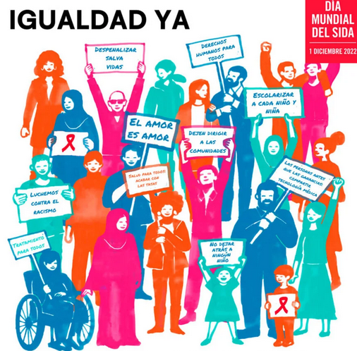

¡Luchemos contra la desigualdad!

Equidad para todos: erradicando la desigualdad en la BUAP" es promover la inclusión y la equidad en la Universidad Autónoma de Puebla (BUAP), abordando las desigualdades existentes en la institución en términos de acceso a oportunidades académicas y laborales para todos los estudiantes, independientemente de su origen socioeconómico, género, raza u otra característica.
Para alcanzar este objetivo, el programa se enfocará en las siguientes metas:
- Aumentar el acceso a becas y ayudas económicas: El programa trabajará para aumentar el acceso de los estudiantes a becas y ayudas económicas que les permitan financiar sus estudios universitarios. Se diseñarán nuevas becas y se mejorará la transparencia y el proceso de selección para garantizar que los estudiantes más necesitados puedan recibir apoyo financiero.
- Mejorar el acceso a recursos educativos: El programa trabajará para mejorar el acceso de los estudiantes a recursos educativos, como bibliotecas, laboratorios y tecnología. Se buscará la creación de nuevos recursos educativos y la mejora de los recursos existentes, para que todos los estudiantes tengan igualdad de oportunidades para el aprendizaje.
- Abordar las desigualdades de género: El programa abordará las desigualdades de género presentes en la universidad, como la brecha salarial de género y la falta de representación en puestos de liderazgo. Se buscará fomentar la igualdad de oportunidades para hombres y mujeres en la universidad, promoviendo la inclusión y el respeto a la diversidad.
- Abordar las desigualdades de origen étnico: El programa abordará las desigualdades de origen étnico presentes en la universidad, fomentando la inclusión de estudiantes de diferentes orígenes étnicos y culturales en la institución. Se buscará la creación de programas de apoyo y mentoría para estudiantes de comunidades marginadas y se fomentará la representación de la diversidad étnica en la institución.
- Promover la inclusión laboral: El programa trabajará para promover la inclusión laboral de todos los estudiantes en la universidad, independientemente de su origen socioeconómico, género, raza u otra característica. Se buscará la creación de programas de prácticas profesionales y de empleo para todos los estudiantes y se fomentará la igualdad de oportunidades en la selección y promoción de personal.